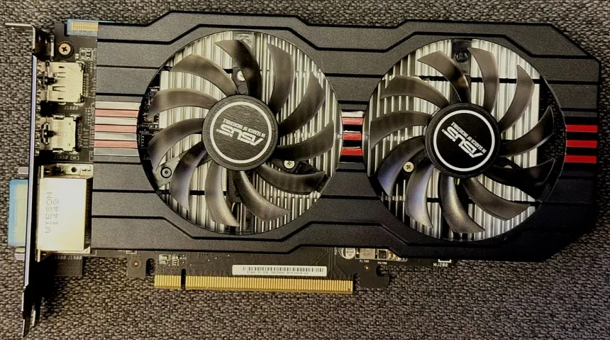

Regresar
DESCRIPCION
La serie Radeon R7 260 / 260X de AMD, lanzada en 2013, representó una opción de gama media en la línea de tarjetas gráficas. Basada en la arquitectura Graphics Core Next (GCN), estas tarjetas ofrecían un rendimiento sólido para juegos y aplicaciones multimedia, con soporte para DirectX 11.2 y OpenGL 4.3. La serie R7 260 / 260X fue bien recibida por los usuarios que buscaban un equilibrio entre rendimiento y precio.

ESPECIFICACIONES
- Arquitectura: Graphics Core Next (GCN)
- Memoria: 1 GB a 2 GB GDDR5
- Interfaz de memoria: 128 bits
- Velocidad de memoria: 1500 MHz
- Ancho de banda: 96 GB/s
- Núcleos Stream: 768 a 896 (dependiendo del modelo)
- Frecuencia base: 1000 MHz a 1100 MHz
- Interfaz: PCI Express 3.0 x16
- Consumo (TDP): 115 W a 150 W
- Fuente recomendada: 450 W a 500 W
- Salidas de video: DVI, HDMI, DisplayPort (según el modelo)
- Resolución máxima: Hasta 1920 × 1080 (WQXGA)
- Tecnologías: DirectX 11.2, OpenGL 4.3, AMD CrossFire (para modelos compatibles)
precio: 100$
Realizar pedido